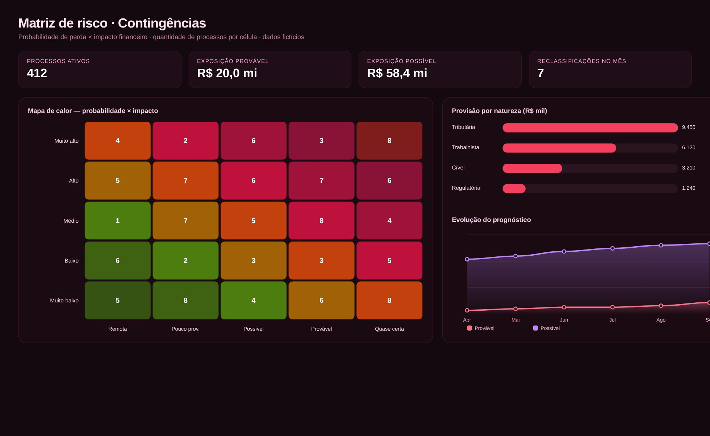

Documento + mapa de risco
Contingências Judiciais
Classificação de risco e provisão para as naturezas Tributária, Trabalhista, Regulatória e Cível.
JudicialContingência TributáriaContingência TrabalhistaContingência RegulatóriaContingência Civil


Tela de demonstração com dados fictícios